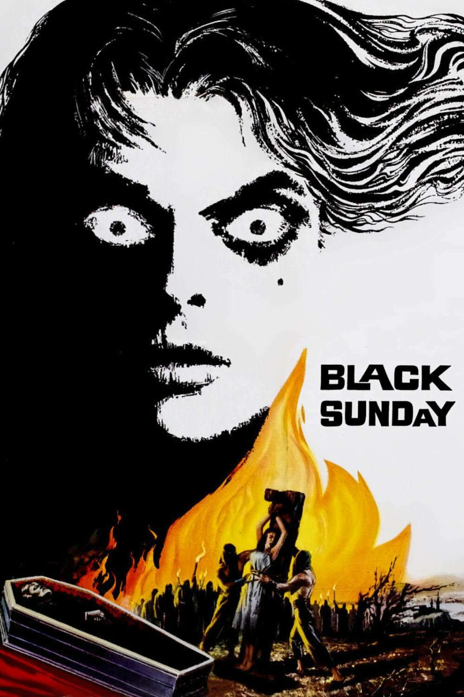
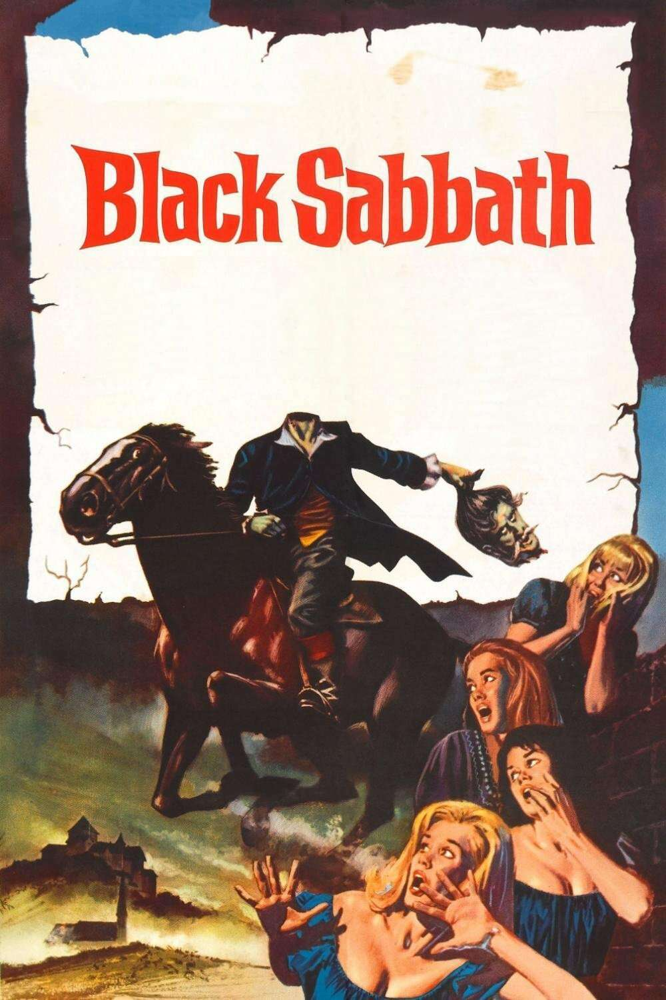
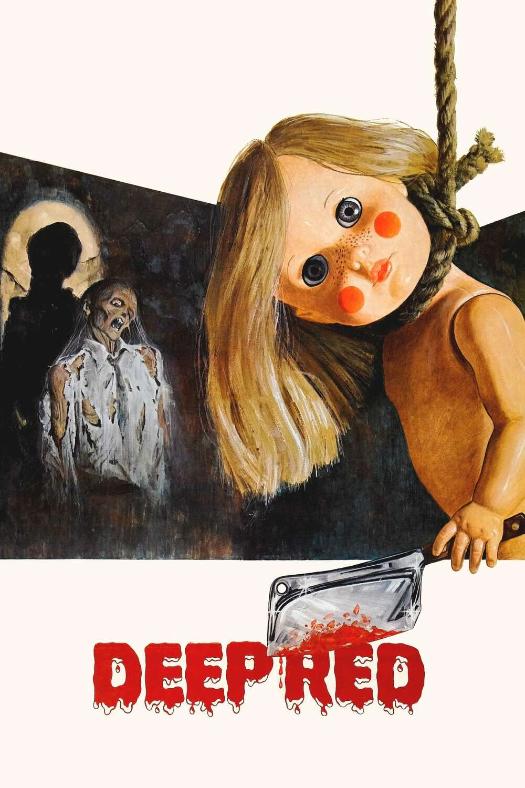
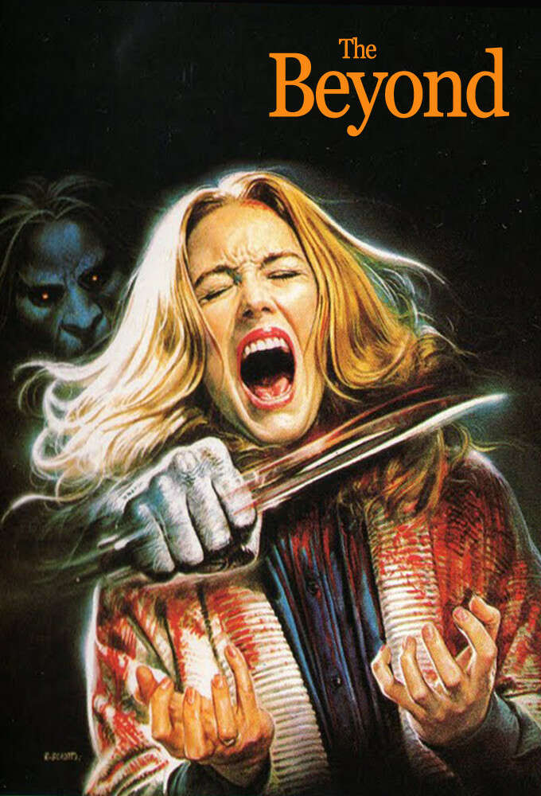
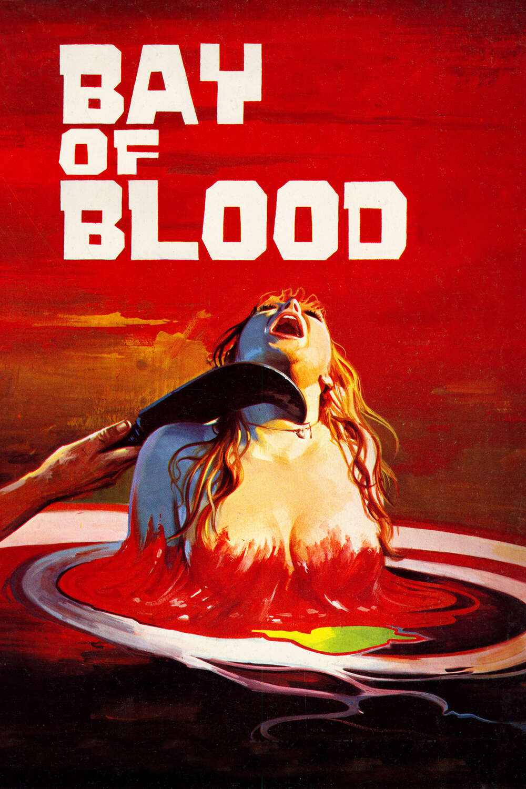

Italian Horror Cinema
Italian Horror Masterpieces: A Journey Through Gothic and Gory Cinema
Italian horror cinema has left an indelible mark on the genre, crafting films that blend atmospheric dread, striking visuals, and haunting narratives. Among the most revered are Black Sunday (1960), Black Sabbath (1963), Deep Red (1975), Suspiria (1977), and The Beyond (1981). Each of these films is a masterpiece in its own right, contributing unique elements that have influenced filmmakers and captivated audiences worldwide.

Black Sunday (1960): Gothic Horror Redefined
Directed by Mario Bava, Black Sunday is a cornerstone of Italian gothic horror. Based on Nikolai Gogol’s short story Viy, it tells the chilling tale of a witch, Asa Vajda (Barbara Steele), executed by her brother but resurrected centuries later. The film’s brooding black-and-white cinematography evokes a dreamlike quality, with eerie castles, fog-laden forests, and unrelenting dread. Bava’s innovative use of lighting and framing elevates Black Sunday into an artistic marvel, while Steele’s dual performance as the vengeful witch and her innocent descendant cemented her status as an icon of horror.

Black Sabbath (1963): The Birth of the Horror Anthology
Another Mario Bava masterpiece, Black Sabbath is an anthology film featuring three unsettling stories, each exploring different facets of terror. The standout segment, The Wurdulak, stars Boris Karloff as a vampire who preys on his family, blending folklore with familial betrayal. Each story showcases Bava’s mastery of tone, shifting from psychological suspense to supernatural horror. The film’s vibrant color palette and chilling sound design make it a visually and emotionally impactful experience.

Deep Red (1975): The Pinnacle of Giallo
Dario Argento’s Deep Red (or Profondo Rosso) is a quintessential example of the giallo genre, blending murder mystery with slasher elements and a distinctive artistic flair. The story follows a pianist (David Hemmings) who witnesses a murder and becomes entangled in the search for the killer. Argento’s signature use of vivid colors, particularly blood-red hues, and his collaboration with the progressive rock band Goblin for the score create a hypnotic atmosphere. The film’s meticulously crafted murder sequences and intricate plot twists keep viewers on edge.

Suspiria (1977): A Nightmare in Technicolor
Argento’s Suspiria is an audacious blend of surrealism, witchcraft, and horror. Set in a ballet academy with sinister secrets, the film is renowned for its bold use of color, particularly its expressionistic lighting. Argento collaborated again with Goblin, whose eerie, pounding score amplifies the film’s nightmarish quality. Suspiria eschews traditional narrative logic, instead immersing viewers in a sensory experience where every frame feels like a piece of dark art.

The Beyond (1981): Gore and Cosmic Terror
Lucio Fulci’s The Beyond is a haunting blend of supernatural horror and gore, embodying the director’s signature style. Set in a Louisiana hotel built atop one of the seven gates of hell, the film plunges viewers into a surreal world where reality and nightmare blur. Fulci’s emphasis on grotesque imagery—spiders devouring flesh, melting faces, and undead hordes—creates an almost operatic exploration of death and decay. Despite its loose narrative, The Beyond is an unforgettable experience, driven by its unsettling atmosphere and Fabio Frizzi’s haunting score.

Unordered List: Key Highlights of the Italian Horror Masterpieces
- Black Sunday (1960): Gothic horror with eerie black-and-white cinematography and Barbara Steele’s iconic dual performance.
- Black Sabbath (1963): An anthology film blending folklore, psychological horror, and supernatural dread.
- Deep Red (1975): A giallo masterpiece with vivid visuals, intricate murder sequences, and Goblin’s haunting score.
- Suspiria (1977): A surreal technicolor nightmare set in a sinister ballet academy, featuring an avant-garde approach to horror.
- The Beyond (1981): A gore-laden exploration of cosmic terror with surreal imagery and Fabio Frizzi’s chilling music.
Ordered List: Chronological Evolution of Italian Horror
- 1960 – Black Sunday: Mario Bava’s gothic tale of witchcraft and revenge, reviving gothic horror in cinema.
- 1963 – Black Sabbath: A groundbreaking anthology film showcasing Bava’s mastery of atmospheric horror.
- 1975 – Deep Red: Dario Argento’s quintessential giallo film, blending mystery, slasher elements, and psychological tension.
- 1977 – Suspiria: Argento’s experimental masterpiece, redefining horror with its surreal visuals and sound.
- 1981 – The Beyond: Lucio Fulci’s gore-heavy exploration of hellish dimensions and supernatural horror.
The Lasting Impact of Italian Horror
These films exemplify the innovation and artistry that define Italian horror. From the gothic elegance of Black Sunday to the surreal nightmares of Suspiria and The Beyond, they pushed the boundaries of the genre, combining technical brilliance with thematic depth. Italian horror directors like Bava, Argento, and Fulci not only shaped the horror landscape but also inspired generations of filmmakers across genres.
Their enduring appeal lies in their ability to evoke primal fears while mesmerizing audiences with unforgettable visuals and music. As modern cinema continues to draw from their influence, these masterpieces remain vital cornerstones of horror history.
